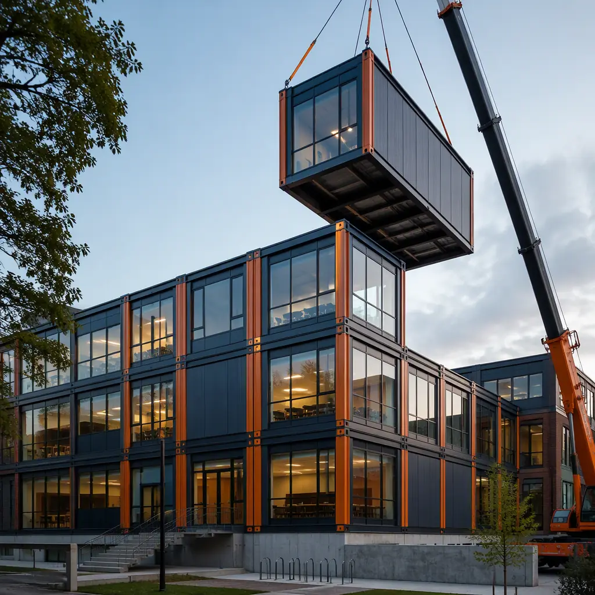
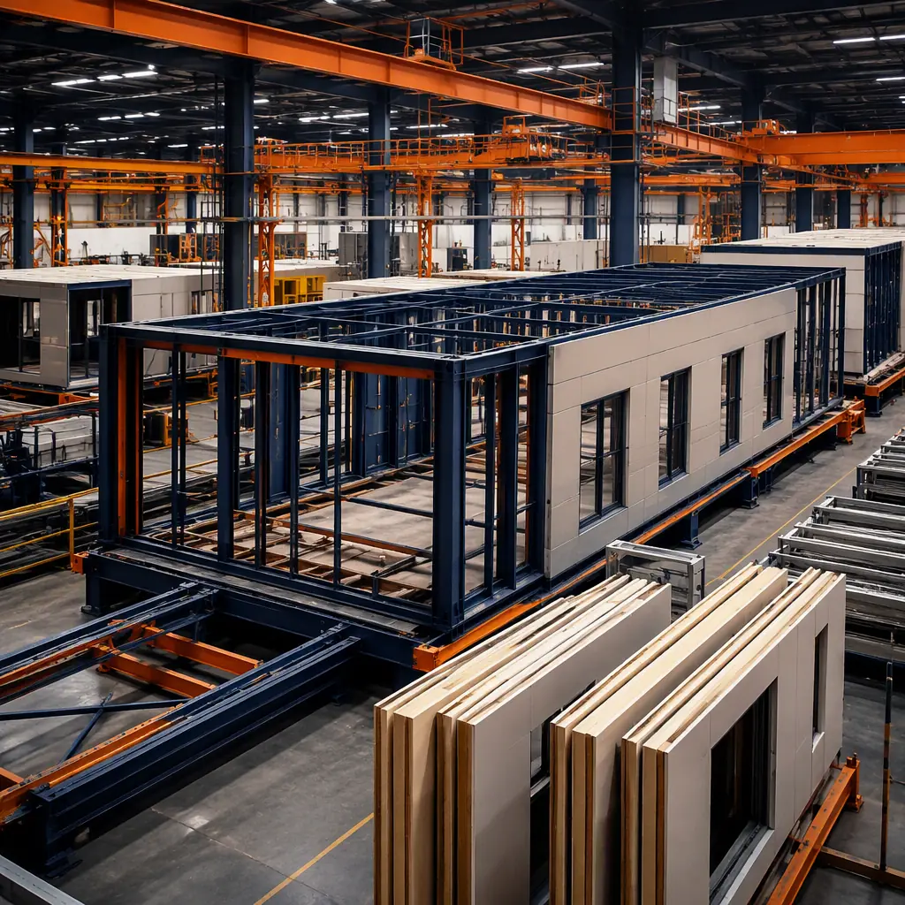
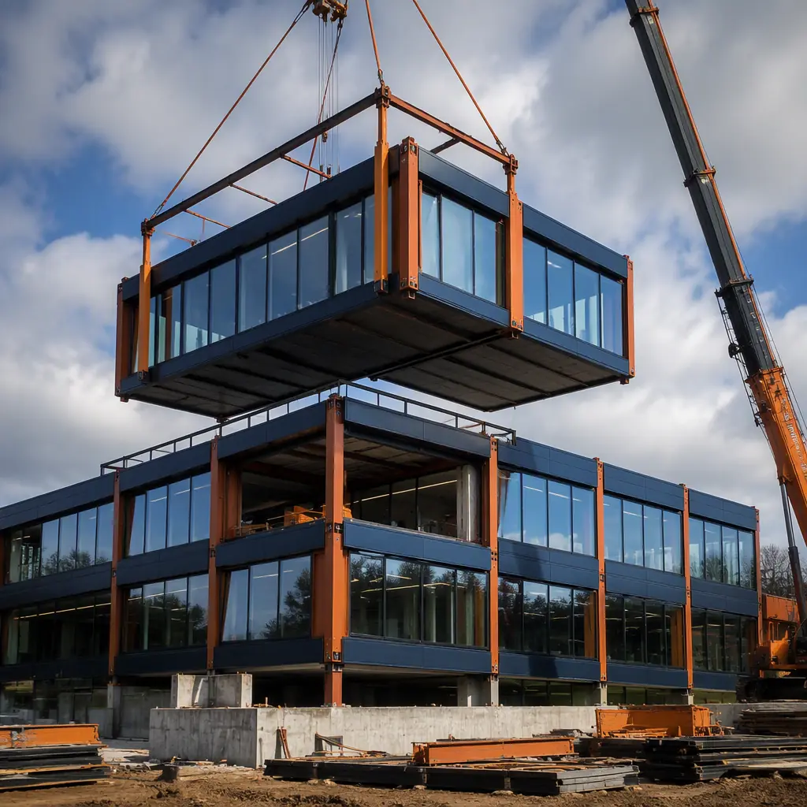
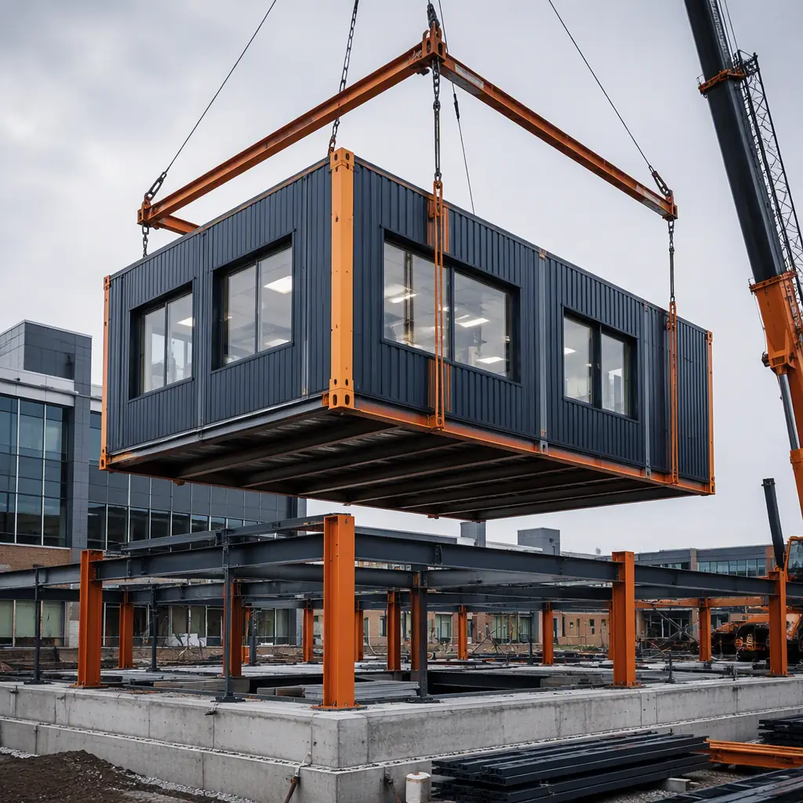
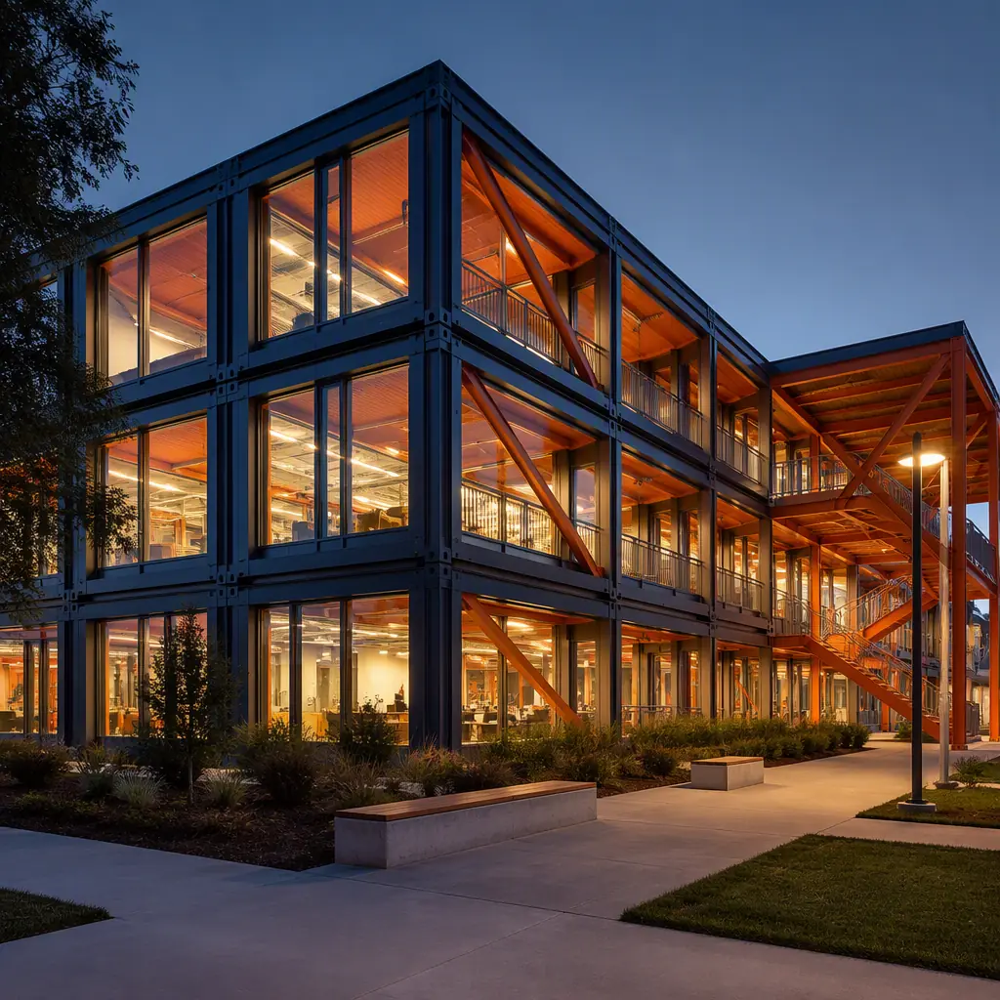

University capital planning operates on a paradox: academic demand follows enrollment cycles that shift faster than construction can respond. A university that approves a new science building today will open it to students in 3–4 years — by which time the enrollment patterns that justified the building may have changed, the faculty who championed it may have retired, and the construction budget that was approved may have been consumed by escalation. Modular construction breaks this paradox by compressing the academic building timeline to 8–12 months for standard academic facilities and 14–18 months for laboratory-intensive buildings. The result is not just faster delivery; it is a fundamentally different relationship between university capital planning and academic demand — one where a dean can identify a capacity shortfall in the spring and open new classrooms in the following spring semester. This article examines how modular construction serves university academic buildings specifically: the acoustic engineering required for lecture halls, the laboratory infrastructure for teaching labs, the campus disruption equation that makes modular the preferred method for infill construction, and the cost structure that university CFOs and facilities directors need to evaluate.

Why Universities Are Adopting Modular Academic Construction
Three pressures are pushing higher education institutions toward modular construction — and none of them are about the construction method itself. They are about the university's ability to fulfill its academic mission while construction is underway:
Campus disruption is not a construction inconvenience — it is an academic liability. A conventional construction project on an active university campus generates 18–36 months of fencing, crane swings, delivery truck traffic, dust, noise, and vibration — all of which degrade the campus experience for students who are paying $30,000–$60,000 per year in tuition and fees. For a university building a new academic facility on an infill site surrounded by occupied classroom buildings, the construction-period disruption affects 5,000–10,000 students daily. Modular construction reduces on-site construction duration by 60–70% compared to conventional methods: the bulk of the building is fabricated in the factory while site work proceeds in parallel, and the modules arrive on campus for assembly over 4–8 weeks rather than 12–18 months of on-site activity. For a university president facing faculty complaints about construction noise during lectures, this timeline compression is worth more than any hard-cost saving.
Academic building programs change during construction — and conventional construction cannot adapt. A biology department that specified 12 teaching labs in the project planning phase may discover, two years into construction, that computational biology has grown 40% and wet-lab demand has shifted to dry-lab and data science workspace. In conventional construction, this program change triggers redesign, re-permitting, demolition of completed work, and a 6–12 month schedule extension. In modular construction, lab modules can be reconfigured at the factory up to the point of module completion, and module interiors can be refitted for different academic functions without affecting adjacent modules. The modular approach does not eliminate the cost of a program change, but it dramatically reduces the schedule penalty — and in university construction, where escalation adds 4–6% annually to construction costs, schedule is cost.
Deferred maintenance backlogs create demand for replacement buildings, not just expansion. The American Society of Civil Engineers gives US university infrastructure a D+ grade, with an estimated $112 billion in deferred maintenance across public universities alone. Many mid-century academic buildings are reaching end-of-life simultaneously: their MEP systems are obsolete, their floor-to-floor heights cannot accommodate modern lab ventilation, and their structural systems cannot support the vibration criteria for contemporary research equipment. Replacing these buildings with site-built construction means 3–4 years of displaced academic programs. Modular replacement — where the new building is fabricated offsite, craned onto the cleared site, and occupied within 12 months — reduces program displacement by 60–70%. For a chemistry department that would otherwise spend three academic years in temporary facilities, the modular timeline represents three cohorts of students who experience the department in its permanent home, not in swing space.

Lecture Hall Design — Acoustic Requirements for Tiered Instruction Spaces
Lecture halls present a specific acoustic challenge that modular construction is well-suited to address: a large volume space (typically 1,500–3,000 sq ft, seating 100–300 students) where unamplified speech must be intelligible at every seat. The acoustic performance standard is Reverberation Time (RT60) — the time required for sound to decay by 60 decibels after the source stops. ANSI S12.60 specifies an RT60 of 0.6 seconds or less for classrooms up to 10,000 cubic feet, and 0.7 seconds for larger lecture spaces. Achieving this in a lecture hall requires absorption on the ceiling (acoustic ceiling tiles with NRC 0.70+), absorption on the rear wall (to prevent slap echo from the instructor's voice reflecting back), and diffusion on side walls (to distribute reflected sound evenly without creating focused echoes).
In modular construction, lecture hall modules are built with the acoustic treatment integrated into the module structure. The tiered floor — a steel structure supporting stepped seating platforms — is fabricated as a single module or as connected modules. Acoustic wall panels are installed in the factory, tested for absorption coefficients, and never exposed to construction-site moisture or damage. The ceiling plenum — which in a conventional lecture hall is a coordination nightmare involving the structural engineer (for the roof trusses), the mechanical contractor (for the HVAC ducts), the electrical contractor (for the lighting), and the AV contractor (for the projection and sound system) — is built as an integrated assembly in the factory, with all four trades coordinated and commissioned before the module ships.
The result is acoustic performance that is verified, not assumed. A modular lecture hall module can be tested for RT60 in the factory, with absorption panels adjusted or added as needed to meet the 0.6–0.7 second target. A site-built lecture hall is tested for RT60 after construction is complete — and if it fails, remediation typically involves adding absorption panels to finished surfaces, a process that is visually intrusive and functionally limited by the available wall and ceiling area. The difference between factory-verified and field-tested acoustic performance is the difference between a lecture hall that works acoustically on day one and one that requires a semester of complaints, measurements, and retrofits to become acceptable.
For a detailed analysis of how modular construction achieves acoustic performance across building types, see our article on modular building acoustic performance — soundproofing standards for prefab hotels, apartments, and offices.

Teaching Laboratory Modules — Infrastructure for STEM Education
Undergraduate teaching laboratories are the highest-infrastructure spaces on a university campus, requiring fume hood exhaust, compressed air, natural gas, vacuum, deionized water, emergency eyewash and shower stations, and HVAC with 6–12 air changes per hour — all within a single room that must also accommodate 24–32 students at lab benches. Conventional construction of a teaching lab building sequences these systems over 18–24 months: structural steel, then MEP rough-in (ductwork, piping, conduits), then lab casework, then fume hoods, then commissioning. Each trade must access the same 1,200 sq ft lab space sequentially, and delays in any trade cascade to all subsequent trades.
Modular lab construction solves the sequencing problem by building each lab module as a self-contained unit in the factory. A 1,200 sq ft teaching chemistry lab module is fabricated with fume hood duct connections, gas turrets, sink plumbing, and electrical panels pre-installed. The lab casework — epoxy resin benchtops on steel cabinetry — is installed and leveled in the factory. The HVAC ductwork serving that module is pre-connected within the module's ceiling plenum, with duct stubs positioned at the module boundary for connection to the building's central air handling unit. When the module arrives on campus, the site contractor connects four types of utilities at the module interface (exhaust duct, supply duct, plumbing risers, electrical feeders) and the lab is ready for commissioning — a process that takes 2–3 weeks per module rather than 4–6 months for a site-built lab floor.
For universities that operate specialized research facilities alongside teaching labs, our article on modular labs and research facilities covers the infrastructure requirements for BSL-2 and BSL-3 environments, cleanroom protocols, and vibration-sensitive equipment foundations.
When a university builds a chemistry building conventionally, the fume hood exhaust ductwork is installed after the structural steel is up and the roof is on — which means duct installers are working in a partially enclosed space, at height, connecting 18-gauge stainless steel duct sections that must maintain a continuous welded seam for chemical resistance. In a modular chemistry lab, that same ductwork is installed at waist height on the factory floor, welded and pressure-tested under controlled conditions, and never touched again. The quality differential is not theoretical — it is visible in the weld continuity and measurable in the duct leakage rate.

Cost Structure — What University Facilities Directors Need to Know
University construction costs are driven by three factors that modular construction addresses directly: escalation during long construction timelines, general conditions cost proportional to site duration, and the premium for construction on an occupied campus. When all three are accounted for, modular academic buildings are 10–20% less expensive than conventional equivalents on a total project cost basis — even if the hard-cost per square foot is comparable.
Escalation protection. Construction cost escalation in the US education sector averages 4–6% annually. A $30 million academic building with a 3-year construction timeline will experience approximately $3.5–$5.5 million in escalation before it opens. A modular equivalent with a 12-month construction timeline experiences $1.1–$1.8 million in escalation — a saving of $2.4–$3.7 million that goes directly to the project budget. This is not a hard-cost saving; it is a timeline saving that behaves like a hard-cost saving in the project pro forma.
General conditions compression. General conditions — site supervision, temporary utilities, construction fencing, safety monitoring, material hoisting — typically represent 8–12% of total construction cost and scale linearly with site duration. A 12-month modular project incurs roughly one-third the general conditions cost of a 36-month conventional project on the same site. For a $30 million academic building, that difference is approximately $1.6–$2.4 million.
Campus operations cost avoidance. This is the category that university CFOs tend to undervalue and faculty senates tend to overvalue: the cost to the university of disrupted academic operations during construction. Temporary classrooms, relocated faculty offices, swing space for displaced programs, and reduced campus accessibility cost $200,000–$500,000 per year for a mid-size academic building project. On a 3-year construction timeline, that is $600,000–$1.5 million in operational disruption — costs that are reduced by 60–70% on a modular project timeline.
For the financing framework that university capital planners need, see our guides on modular construction financing — loans, insurance, and funding models for developers and modular construction cost per square foot. For the comparison with traditional methods that facilities directors rely on, see modular versus traditional construction — schedule, cost, and quality across building types.
| Cost Factor | Modular (12-month timeline) | Conventional (36-month timeline) | Saving |
|---|---|---|---|
| Escalation (4.5% annual on $30M) | $1.35M | $4.05M | $2.7M |
| General conditions (10% of $30M, pro-rated by duration) | $1.0M | $3.0M | $2.0M |
| Campus disruption (swing space, temp facilities) | $200–$400K | $600K–$1.5M | $400K–$1.1M |
| Total non-hard-cost advantage | $2.55–$2.75M | $7.65–$8.55M | $5.1–$5.8M |
Integrating Academic Buildings with Campus Master Plans
Modular academic buildings are not temporary structures masquerading as permanent ones — they are permanent buildings designed to the same 50-year service life as conventional construction, using the same structural steel, concrete floor slabs, and architectural exterior finishes. The modular construction method does not constrain the architectural expression of the building; it changes where the building is assembled, not what it looks like or how long it lasts.
This is an important distinction for university architects and campus planners who may associate "modular" with the portable classrooms of their K-12 counterparts. A modular university academic building can incorporate any exterior finish system — brick veneer, terra cotta rain screen, curtain wall glazing, metal panel cladding — that is compatible with the steel frame module chassis. The module grid (typically 12–14 ft wide by 40–60 ft long) establishes a structural rhythm that experienced architects use as a design generator, not a constraint: the module seams can be expressed as architectural reveals, concealed behind continuous facade elements, or celebrated as part of the building's tectonic narrative.
For university planners who may have encountered modular construction in the context of K-12 school construction or student housing, the academic building application is best understood as an extension of the same principles — factory precision, timeline compression, reduced site disruption — applied to buildings with higher infrastructure density and more specialized program requirements. The factory that builds a 1,200 sq ft chemistry lab module for a university is the same factory that builds a 350 sq ft hotel room module; the difference is in the MEP density internal to the module, not in the structural system or the assembly process.
